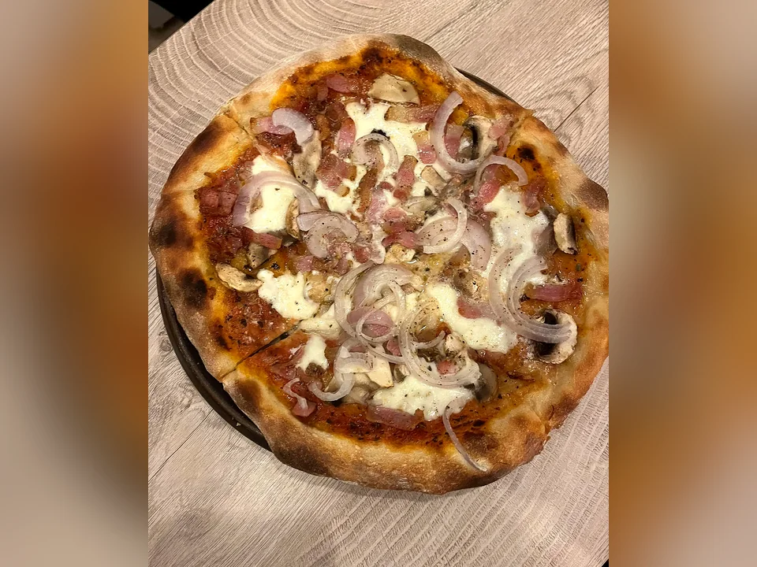

Masa de pizza casera con fermentación de 24 horas
Una masa de pizza hecha con harina de fuerza y harina común, 24 horas de fermentación en bloque en la nevera y tres horas finales de reposo antes del horno.
- Preparación
- 25–30 min aprox.
- Reposo inicial
- 20 min
- Fermentación
- 24 h en nevera
- Reposo final
- 3 h
- Rinde
- 6 pizzas

Ingredientes
6 pizzas de unos 280 g de masa
Marca lo que ya tienes.
Esta masa se prepara con 5 g de levadura seca de panadero, no con levadura fresca ni levadura química de repostería.
Cómo preparar masa de pizza de 24 horas
- Mezcla las harinas y la levadura. Pon en un bol los 500 g de harina de fuerza y los 500 g de harina de trigo común. Añade los 5 g de levadura seca de panadero y mezcla.
- Añade la mitad del agua. Incorpora unos 325 g de agua y comienza a amasar durante 3 minutos.
- Incorpora la sal y el agua restante. Añade los 25 g de sal y ve incorporando poco a poco los 325 g de agua que quedan, mientras sigues amasando, hasta integrarla por completo.
- Añade el aceite y termina de amasar. Vierte un chorrito de aceite de oliva y continúa amasando unos 5 minutos, hasta conseguir una masa homogénea.
- Deja reposar 20 minutos. Tapa la masa y déjala reposar durante 20 minutos.
- Fermenta 24 horas en bloque. Sin dividirla, forma una sola bola grande. Colócala en un recipiente suficientemente amplio, tápalo y deja fermentar la masa 24 horas en la nevera.
- Forma seis bolas tres horas antes. Tres horas antes de hornear, saca el bloque de masa de la nevera. Divídelo en seis porciones de unos 280 g, forma una bola con cada una y déjalas reposar tapadas a temperatura ambiente durante esas tres horas.
- Estira y añade tomate natural. Precalienta bien el horno a su temperatura máxima. Estira cada bola con suavidad, reparte una capa fina de tomate natural triturado o rallado y añade los demás ingredientes a tu gusto.
- Hornea hasta que esté dorada. Hornea las pizzas en el horno bien caliente hasta que la base esté cocida y el borde dorado. El tiempo depende del horno, el grosor de la masa y la cobertura.
UN POCO DE OFICIO
Para que te salgan bien
Organiza los reposos
Las 24 horas de frío son con la masa entera, sin dividir. Haz las seis bolas solo cuando saques la masa de la nevera, tres horas antes de hornear.
Tomate y cobertura
La receta propone tomate natural rallado o triturado como base. Si suelta mucha agua, escúrrelo un poco. Completa cada pizza con los ingredientes que prefieras.
En el horno
Precalienta bien el horno y observa el borde y la base. No hay un tiempo fijo de horneado en la receta: cambia según el horno y los ingredientes.
MÁS SOBRE ESTA RECETA
↑ Volver a la recetaMasa de pizza con 24 horas de fermentación: cómo organizar los tiempos
Una pizza casera puede empezar el día anterior. Esta masa combina dos harinas a partes iguales y un reposo largo en frío. El detalle importante no es solo esperar 24 horas: durante todo ese tiempo se guarda en un único bloque y las seis bolas se forman cuando faltan tres horas para hornear.
Dos harinas, una sola masa
La fórmula parte de 500 g de harina de fuerza y otros 500 g de harina de trigo común, con 650 g de agua y 25 g de sal. Primero se mezclan las harinas con la levadura, después se incorpora el agua en dos tandas y al final se añade un chorrito de aceite de oliva. Tras amasar, la masa reposa 20 minutos antes de entrar en la nevera.
Las 24 horas son en bloque
Aquí no se forman las bolas la noche anterior. Toda la masa pasa junta 24 horas tapada en frío. Cuando quedan tres horas para cocinar, se saca, se divide en seis porciones y se forman las bolas. Ese reposo final, ya a temperatura ambiente, es parte de la preparación y no debe confundirse con las horas de nevera.
Una base sencilla para elegir la cobertura
El tomate natural rallado o triturado es la base recomendada en la receta. La elección del resto de ingredientes queda abierta: lo fundamental es precalentar bien el horno y vigilar cuándo la base y los bordes están listos. Si te apetece otra receta para una mesa informal, prueba también el pan con ajo y aceite o los ñoquis con salsa blanca y bacon.
Opiniones sobre esta receta
Consultando valoraciones…